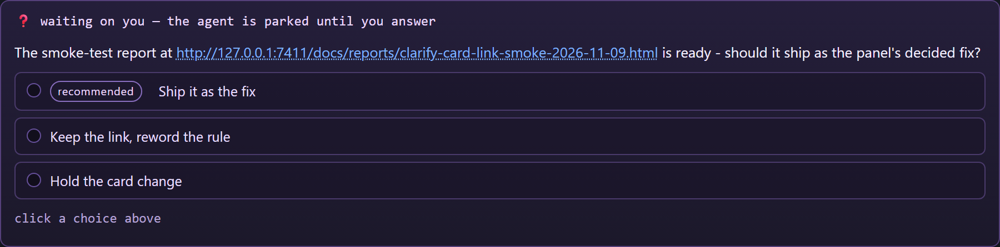

The clarify card's question link
Smoke test report - 2026-11-09 - one URL in a question, rendered as a link and clicked, not asserted
What was wrong
A clarify card is where a parked agent asks for a decision, and the decision often needs the thing the
question names: a report, a page, a run. The card drew its question with esc() only, so a URL in
the question came out as text. The reader's only move was to select it, copy it, and paste it into a browser -
on a card whose whole job is to hand the reader the decision.
What changed
public/app.jsquestionPromptrenders the question throughlinkifyText(public/core/dom-format.js). That helper escapes the text first and then wraps eachhttp(s)URL in the panel's own anchor: classout-link,target="_blank",rel="noreferrer noopener", anddata-open-url.- The anchor is the same one the console and the turn cards already use, so it looks and behaves like every
other link on the board. The page's click handler turns
data-open-urlintoPOST /api/open-url, which opens the page in the OS browser: the board never navigates away from the run the question belongs to. - Nothing else about the card changed: the choices, the typed answer, the countdown, the re-ask line and the answered/closed rows are untouched.
The wording rule
A clarify question is one complete sentence naming the report and the decision wanted. It is set in
the brief every spawned worker receives, beside the instruction to use the tool at all
(lib/jobs.js):
clarify when a genuine direction decision is needed, never as a progress
report; the question is one complete sentence naming the report and the decision wanted, so when the reader
asked for a report it carries that report's .html path and offers two to four numbered next directions as the
choices, which is the pattern the reader wants for open-ended research and investigation work.The same rule is written down beside the card's description in README.md. The sentence is what
makes the link work: one question, naming the report, ending on the decision - a second sentence is a second
question, and a question that names no decision is a progress report.
How it is proved
| Check | What ran | Result |
|---|---|---|
| The same cases against the base the branch was cut from | git archive origin/main into a scratch export, this test file copied in,
node --test test/clarify-question-link.test.js run there |
2 pass, 5 fail |
| The shipped question row renders the URL as an anchor, escapes markup, keeps sentence punctuation out of the link, and leaves the choices alone | node --test test/clarify-question-link.test.js - the real questionPrompt,
esc and linkifyText sliced out of the shipped files |
7 pass, 0 fail |
| The anchor is clickable and opens the report | node tools/verify-clarify-card-link.mjs - the shipped row on the shipped
public/style.css, in Chromium; the link's attributes and computed style read, the link
clicked, and the page it opened captured |
19 pass, 0 fail |
| The rule rides every worker's brief | test/brief-follows-the-policy.test.js - the composed spawn input read out of a stub gateway |
pass |

questionPrompt markup on the shipped
public/style.css.Figure 2. The page that same link opened when it was clicked - the capture of the opened report.

What was not changed, and what this does not claim
- A URL in a choice is still the choice's text: the answer rows are labels the agent offers, and a link inside a button is a click that answers the question by accident waiting to happen.
- Only
http(s)URLs are linked. Afile:path or a bare path stays text, because the panel has no safe way to promise a browser can open one. - Re-run the two commands above to reproduce every row. The captures are written under
docs/reports/assets/clarify-card-link-2026-11-09/.